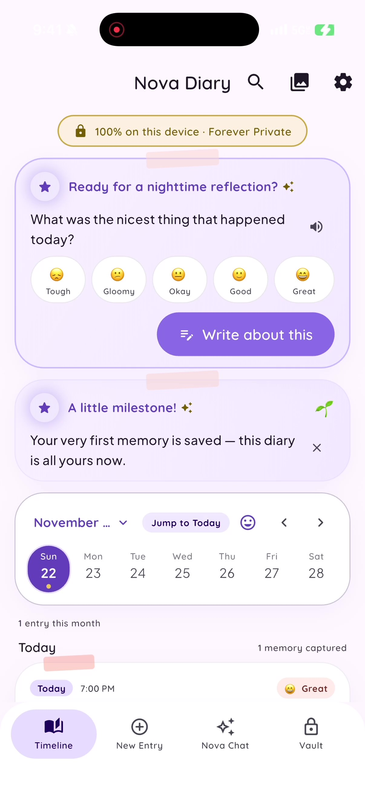
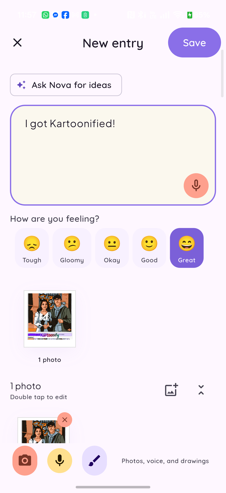
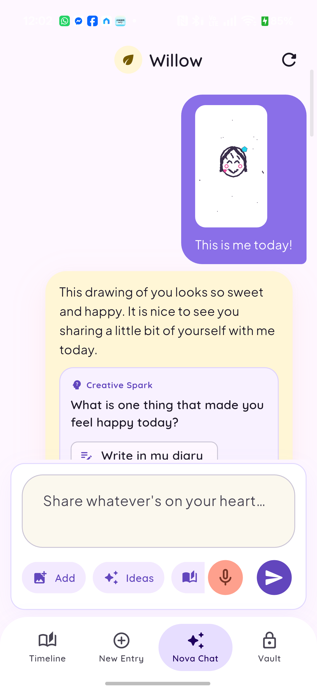
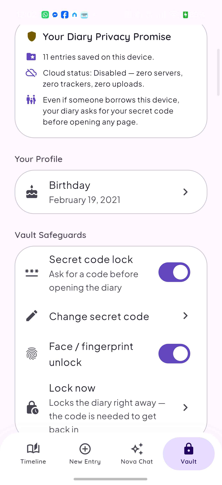
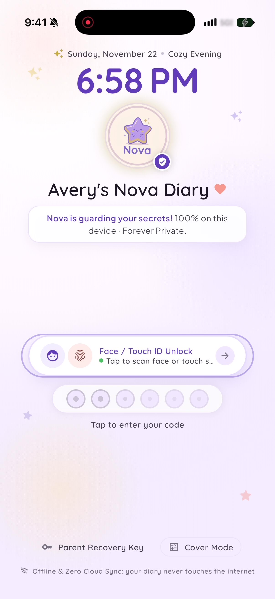

Write your story
Freeform journaling with no pressure. Jot a line, a page, or a whole day — Nova Diary keeps it all private.
Nova Diary is a private, child-friendly diary with an AI companion named Nova. Write about your day, attach a photo or voice memo, and Nova chats back — all on your device. Nothing is ever uploaded, and no account is needed.

Write, draw, attach, and record — mix everything into one private journal that lives only on your device.
Freeform journaling with no pressure. Jot a line, a page, or a whole day — Nova Diary keeps it all private.
Snag a snap, pull one from your gallery, or draw your own. Attachments stay put inside the app — nowhere else.
Record how your day felt instead of typing it. Voice memos become part of your entry, on-device only.
Nova is your friendly diary companion. Tell it what's on your mind, and it responds right there on your phone.
Protect your diary with a passcode or Face ID. Your entries stay locked and on your device, always.
Find that perfect memory quickly with on-device search. Nothing is indexed anywhere but the app.
A few real screens from the app — everything you see here runs on your device.




Nova is your friendly diary buddy. It never judges, never stores anything, and never goes online. It lives entirely on your device — so every conversation stays between you and your phone.
Unlock with a passcode or your device's Face ID. Fresh entries appear, ready for whatever you want to add.
Type, draw, or record. Snap a photo or attach one from your gallery — mix as many as you like into a single entry.
Want to reflect out loud? Nova is there to listen and respond, entirely on your device — no uploads, no accounts.
Every entry stays locked on your phone. No cloud, no sync, no server — your diary is truly yours.
Nova Diary was built around one rule: everything happens on your device. Everything you write, record, or attach stays on your phone — nothing is uploaded unless you choose to share it. There's no account, no cloud, and no server to read your diary. Read our Privacy Policy.
Nova Diary is in development and not yet available on the app stores. We'll share updates here the moment it's ready to download for iOS and Android.
Details aren't final yet, but Nova Diary follows the Pocket AI Labs promise: no accounts and no data to sell. A free tier is expected to lead the way, with an optional premium upgrade that unlocks more features. We'll confirm pricing when it launches.
Yes. Everything you write, draw, or record stays on your device. Nova runs an on-device AI model, so your content never leaves the phone, and there's no account or cloud to store it. Nothing is ever uploaded unless you choose to share an entry yourself.
Nova is an AI companion built to be warm, friendly, and encouraging — not a person, and certainly not a therapist, doctor, or counselor. It won't give medical or professional advice. If things ever feel heavy, Nova gently points you toward a trusted adult or a crisis helpline.
Absolutely. Nova Diary works fully offline. Everything — including Nova — runs on your device, so you can journal anywhere, anytime, with no signal required.
Nova Diary is designed to be child-friendly, with kind and supportive AI responses and a safe, on-device companion. But it's always worth parents and guardians staying involved. A premium tier is expected to add optional parent controls and local alerts.
Not by default. Nova Diary keeps your diary on-device by design — there's no cloud, so your entries stay only where you wrote them. If cross-device sync ever ships, it will be opt-in and built to be private.